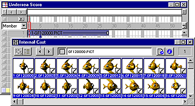
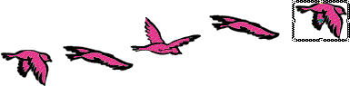

Using Director > Animation > Shortcuts for animating with multiple cast members
Using Director > Animation > Shortcuts for animating with multiple cast members |
Shortcuts for animating with multiple cast members
The Cast to Time and Space to Time commands are both useful shortcuts for animating with multiple cast members.
Using the Cast to Time command
To move a series of cast members to the Score as a single sprite, you use the Modify > Cast to Time command, which is one of the most useful methods for creating animation with multiple cast members. Typically, you create a series of images and then use Cast to Time to quickly place them in the Score as a single sprite. Director's onion skinning feature is also useful for creating and aligning a series of images for use in animation. For more information, see Using onion skinning.

Cast to Time places selected cast members in the Score as a single sprite.
To create a sprite from a sequence of cast members:
1 |
Select the frame in the Score where you want to place the new sprite. |
2 |
Make the Cast window active. |
3 |
Select the series of cast members to be placed in the new sprite. |
4 |
Choose Modify > Cast to Time, or hold down Alt (Windows) or Option (Macintosh) and drag the cast members to the Stage. |
The selected series of cast members becomes a single sprite. |
|
Using the Space to Time command
To move sprites from adjacent channels to a single sprite, you use the Modify > Space to Time command. This method is convenient when you want to arrange several images on the Stage in one frame and then convert them to a single sprite.

Arrange sprites on the Stage in a single frame.

Space to Time converts sprites from adjacent channels to a single sprite.
Onion skinning provides a benefit in the Paint window similar to that provided by Space to Time on the Stage. For more information, see Using onion skinning.
To use the Space to Time command:
1 |
Choose File > Preferences > Sprite and set Span Duration to 1 frame. |
Set the span duration to any setting you like, but Space to Time works best with shorter sprites. |
|
2 |
Select an empty frame in the Score. |
This is usually at the end of the Score. |
|
3 |
Drag cast members onto the Stage to create sprites where you want them to appear in the animation. |
As you position the sprites on the Stage, Director places each sprite in a separate channel. Make sure all the sprites are in consecutive channels. |
|
4 |
Select all the sprites that are part of the sequence in the Score or on the Stage. |
5 |
Choose Modify > Space to Time. |
The Space to Time dialog box appears. Set the number of frames you want between each cast member. |
|
6 |
Enter an interval. |
Director rearranges the sprites so that instead of being arranged from top to bottom in a single frame, they're arranged in sequence from left to right in a single sprite. |
|
Note: Space to Time is a fast way to set up keyframes for a sprite to move along a curve. Arrange the cast members in one frame, choose Modify > Space to Time, and add 10 to 20 cells between each cast member to produce a smooth curve.